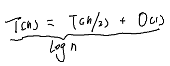

本题的难度在于需要在logn的时间复杂度内完成.而能在logn的时间复杂度内完成的解法一般就是二分法。
可以使用主定理推导得出.由如下公式可以看出,在O(1)的时间内将问题的规模减少了一半,在这种情况下,时间复杂度就可以达到logn

可以将问题改变为寻找第K大的数。根据题意采用递归的二分法，现在要求第k大的数,如果每次能够排除K/2个元素那相当于在O(1)的时间内将问题的规模缩小了一半,那么这个思路用到这道题上具体应该怎么做呢?有下图的例子,现在求A和B两个数组所有元素的的中间数,也就是第5大的数,也就是k=5,那么k/2=2,在这个情况下比较A[k/2-1]和B[k/2-1]的大小,也就是A[1]和B[1],可知A[1]=10,B[1]=2,所以可以确定第5大的数肯定不在B的[0,1]之间,而应该在A[0,3]和B[2,4]中产生,由此排除了2个数,接下来就可以用相同的方法求剩下的数中的第3大的数,由此我们将求第5个大的数的问题通过O(1)的时间缩减为求第3个大的数的问题,成功将问题规模缩减了差不多一半。

但我们还需要考虑一些特殊情况,以下例为说明:

此时k是5,k/2是2,k/2-1=1,要想在A[0,0]中取A[1],很不幸不存在A[1],A取不到这个数,但很明显我们不能冒然将A[0]抛弃,而应该拋弃B[0,1],然后在如下的救组中求第3大的数,

现在k=3,k/2=1,k/2-1=0,而A[0]=5,B[0]=8此时显然应该抛弃A[0],抛弃A[0]之后,A这个数组就彻底消失了,所以剩下的第2大的数就只能在B中获取,那就只能是B[1]=9。
在上面的例子中有两个不存在需要仔细分析区别,这两种情况在代码中有所不同。
1) A数组存在的情况下取第k/2个元素越界
2) A数组所有元素均已抛弃的情况下取第k/2个元素。
class Solution {
public:
double findKth(vector<int> &nums1, int num1_pos, vector<int> &nums2, int num2_pos, int k) {
if (num1_pos >= nums1.size()) {
return nums2[num2_pos + k - 1];
}
if (num2_pos >= nums2.size()) {
return nums1[num1_pos + k - 1];
}
if (k == 1) {
return min(nums1[num1_pos], nums2[num2_pos]);
}
if (num1_pos + k / 2 - 1 >= nums1.size()) {
return findKth(nums1, num1_pos, nums2, num2_pos + k / 2, k - k / 2);
}
if (num2_pos + k / 2 - 1 >= nums2.size()) {
return findKth(nums1, num1_pos + k / 2, nums2, num2_pos, k - k / 2);
}
if (nums1[num1_pos + k / 2 - 1] > nums2[num2_pos + k / 2 - 1]) {
return findKth(nums1, num1_pos, nums2, num2_pos + k / 2, k - k / 2);
} else {
return findKth(nums1, num1_pos + k / 2 , nums2, num2_pos, k - k / 2);
}
}
double findMedianSortedArrays(vector<int>& nums1, vector<int>& nums2) {
int len = nums1.size() + nums2.size();
if ((len & 1) == 0) {
return (findKth(nums1, 0, nums2, 0, len / 2) + findKth(nums1, 0, nums2, 0, len / 2 + 1)) / 2.0;
} else {
return findKth(nums1, 0, nums2, 0, len / 2 + 1);
}
}
};
|